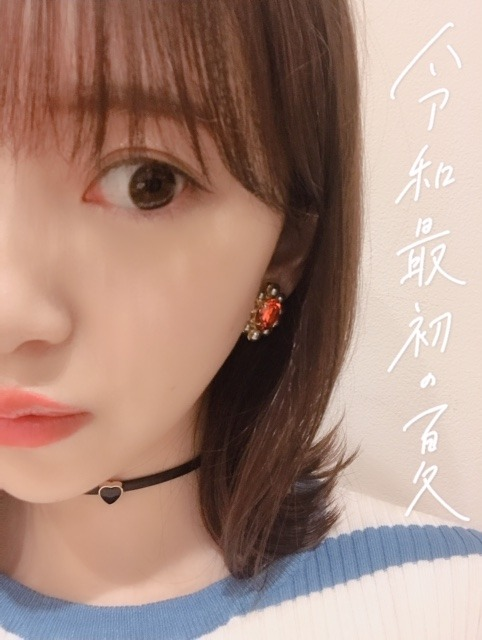

2019/0809Friあっという間
やほ〜

羽田空港に遊びに行ったときに向日葵を見つけました
未央奈っていう名前の候補とは別に、ひまわりっていう名前の候補があったらしくしかも、クレヨンしんちゃんのひまわりが産まれる前だったみたい。
10月生まれなのになんでなんだろう。
造花か生花かは分かりませんが夏を感じたなぁ☺︎


あっという間に夏が終わり、秋が来て冬が来て。
人生って本当にあっという間なんやろなーと
だからこそ大切に大切に生きなきゃね
人に求めるより与えるほうが私はずっと幸せ☺︎
こうしてほしいって求めるんじゃなくて、私ならこうされたら嬉しいなとかこんなことしたら喜んでもらえるかな助けになるかなって考えることが生きがいなんです
もちろんされて嬉しいこといわれて嬉しいこともたくさんあるけどね。


明日は何部かで、ホットギミック tシャツを着ます！
違う部には私服を着ます〜
熱中症気をつけてね
では☺︎
2019/08/09 20:18


コメント(303)
ほんとに時間があっという間だよね……
もうお盆だし、8月も終わっていくのかな……
俺も今を大切にしたいし、乃木坂ちゃんを全力で応援したい＼(^^)／
ひまわりっていう名前でも可愛かったのかなー( ^_^)／いやきっと可愛かっただろーな(^-^)
握手会楽しんでね(^O^)!
福岡のトゥモロー⊿
明日の握手会めっちゃ楽しみ(^^)
わたしもホットギミックTシャツ着ていくよ〜♡
お揃いだといいなぁ〜(* 'ᵕ' )
チョーカー可愛い♡
明日もよろしくお願いします︎☺︎
明日握手会行くね(^ ^)
未央ちゃん可愛い
斉藤貴巳
明日お留守番してます。
名前の候補にひまわりがあったんだね
ひまわりもかわいいね。
未央奈ちゃんこそ熱中症に気をつけてね
体調に気をつけてがんばれー
握手会行きたいなー
大好きです
握手会にも行ったことなくて、未央奈さんを生で見たのは札幌コレクションのときです。一瞬だったけどすごくすごく可愛くてさらに好きになりました。ライブも行きたいし、握手会で未央奈さんと会ってお話しもしたいなと思いました。
こうしてマメにブログ更新してくれてすごく嬉しいです
未央奈さん頑張ってください！応援してます！絶対に未央奈さんに会いに行きます！！
いつもかわいさと笑顔で元気もらってるよ！本当にありがとう！これからもよろしく！結構前はコメントしてたんだけど最近しなくて。ごめんなさい。
今頃家かな？しっかり食べるもの食べて、しっかり寝て、明日も頑張ってね！今日もお疲れ様でした！
未央奈さんも熱中症にならないように頑張ってくださいね☺️ これからも頑張ってくださ い
応援してます！！
ブログ更新ありがとう！
ひまわりって名前も合うね！
ワイヤレスイヤホン買ったやつかな？
人生ってあっという間だよね
おれも今を、今のこの気持ちを大切にしたい！
握手会がんはってね！
これからもずっと応援してる！
がんばれー！
久しぶりに会えるの楽しみにしてるよん。
真っ直ぐに伸びてる茎の先に
でっかい花を咲かせるように
まーっすぐと生きて
人生という大きな花を咲かせてほしい
という願いからきたものなんだよ
人は人に何かを求めることが多いのに
人に与えるほうが幸せなんて
なんて素晴らしいことなんやー
ちなみにマザーテレサは
大切なのはどれだけ与えるのではなく
それを与えることに
どれだけ愛を注いでいるか。です
という言葉を残しています。
チャァオ～～!☆彡
おふぅ⤴️⤴️❕❤️❤️❤️❤️❤️照
・・・ポォ❕❤️❤️❤️❤️❤️照
ハァ❕❕焦り・・・
ひまわりより～～～⤴️⤴️
みおちゃんのほうがぁ～～～⤴️⤴️
何千倍もぉ～～～～⤴️⤴️
何万倍もぉ～～～～～⤴️⤴️
綺麗だよぉ～～～～⤴️⤴️❕❤️❤️❤️❤️❤️笑顔
おふぅ⤴️⤴️❕❤️❤️❤️❤️❤️笑顔
☆大人しい、おすまし！より☆彡
(温かい名前堀ちゃんの性格をよく表してますね)
シャーロックホームズのコメントはーじめるでー
(タメ口でスミマセン ⤵⤵)
人に求めるより、与える方が嬉しいのは、よく判りますが、出来ないのが人という物なんですよね
生き甲斐が、素晴らしいですね
僕の生き甲斐なんて、小説を書くことなんですよ
(この生き甲斐は、他人に奉仕できてるかな？)
コメントは、僕が、堀ちゃん達に唯一繋がれて、「与える」ことが出来るものなので、楽しんでくれたのかは定かでないですが、四期生の遠さくさんのブログに閃きクイズを載せたのと同様に、このブログにも閃きクイズを載せたいと思います
時間があったら、解いてみて下さい
(遠さくさんのブログに載せたクイズの解答は四期生のブログに今度載せます)
下の図が表す食べ物は何でしょう？
・ ・ ・・・・ ・ ・
・ ・・・ ・・・ ・・ ・
・・・ ・・・・・ ・ ・・
最後に二言
上のクイズ、結構難しいので、頑張って下さい！
堀ちゃん大好きです❤
沢山の向日葵をありがとうございます！
夕方の愛犬の散歩コースに、花びらの小さな細くて背の高い種類のは見れるのですが、自分が見たかったのはこの手の種類です。
真夏に力強く逞しく優雅に生きて、見るものを強く惹きつける人生の指針かのように感じさせる向日葵が好きです。
夏の象徴でもあり、向日葵抜きで夏は語れないし、ゴッホも愛した向日葵には敬意を表したいです。
時の過ぎるのはあっという間で、なので惰性で過ごすのではなく、
辛い時や悲しい時はあるでしょうが、それは自身のバネに繋がり明日への糧となる事を固く信じ、その瞬間瞬間を大切にしないとですよね。
自己欲求より、他者への幸せを願う慈愛の心、素晴らしく素敵です。
それは自分にしても永遠の使命でもあると思ってます。
令和最初の夏、まだまだ楽しみたいですね。
と言いますか、楽しまないとです。
ar読みましたよ。
8月に買い足すUVアイテム、美白の堀さんにとって適役すぎます。
夏らしく元気溢れる表情は、キュートでこの上なく、見る自分も幸せになれました。
堀さんが持っている、スイカの団扇が欲しいです。
ホットギミックTシャツ姿、拝見したいです。
お身体にには気をつけて。
向日葵ありがとうございました、嬉しかったです。
頑張って行きましょう！
連日ブログ更新堀ちゃん！感激！
乃木坂メンバーの中でファンの気持ちを裏切らないのは堀ちゃんがダントツだね。
今日のショットもかわいいよ。
豆の木の形?のネックレスさりげなくオシャレだね
また顔半分の写真いいね。
ぴえんの画像、何故泣いてるの？
気になるなあ(笑)
先週かな、堀ちゃんが台湾行った時の画像みたけど、その時の白いTシャツにジーンズ?
ラフな感じの格好も好きです。
明日も暑いけど握手会ファイト！
明日も更新期待しますよ。
ではサヨナラ。
みおなちゃん好き。
お疲れ様なのです└(ﾟ∀ﾟ└) (┘ﾟ∀ﾟ)┘
ちょっと見えるアクセサリーが可愛い(*≧з≦)ね
蔦は延びるよ何処までも！太陽にハイタッチする為に？
何てな♪( ´∀｀)人(´∀｀ )♪
何故に泣いてるの？暑いから？
私は、ダンまちのオリオンの矢を見て泣いてます(つд⊂)
よく泣きます。本読んでても泣きます。
泣き過ぎて先を読めなくなることもΣ(´□｀;)！
これマジです(*>д<)（ノゲ）
体調に気を付けて(´＿｀。)ﾞ
んじゃね～！Σ⊂(ﾟДﾟ ) イヤホン・イェイ('ε'*)
イヤホンつけてる堀ちゃんもめちゃくちゃ可愛い～
あと…どーして泣いてるのぉ？泣くのはやめて笑おぉ～！
堀ちゃんのショートヘアをもう一回見たいです！
堀ちゃんも熱中症に気をつけて頑張ってね！
好きすぎる！
この気持ちどうしたらいい？
呼びにくく‥‥ないですか？
ないです。
ごめんなさい。
O(><;)≡(;><)O
期待していないからこそ、嬉しさがあるんだと思います。
(^ー^)
ひまわりって美しい花だと思うんです。何故かと言われると答えられないけど、、
ほんと暑いよね
体には気をつけないと！
またね
あの、もう夏終わりそうなんですけど、夏メイクとか教えて欲しいです
レザーフェイスのコスプレ次こそは！と思ってたら個握が…
みおなの考え方、素敵すぎるよ(*´∀`)♪
尊敬してる(*^^*)
見習おうと思う！
沢山、写真アップしてくれてありがとう(*´∀｀)
元気になった(^-^)v
ありがとう！
またね！
おばんでござりますm(o_n)m
烈夏だねぇ～
ひまわりといえば、思い出すなぁ北海道北竜町を。周りの景色は最高だし、一面のひまわり畑は圧巻だったなぁ～
明日、個握の券が取れたので初めて会いに行くよ～。北海道から帰還して半年、やっとこの日が来た
ただ、何をべしゃろうか全然決まらない・・・
たまに聴いているレコメンにするか、
新曲の感想にするか、
う～ん、みお～なさんから可愛さを引き出す術は・・・
今日もお疲れ様です
ひまわり綺麗ですね
最近、庭にひまわりが咲いてて前は低かったのに2メートルくらいまで高くなってました（自分は背が180センチだけど、抜かれた笑）
明日はいよいよ握手会なので楽しみです
今回は2部と3部しか券が取れなかったので、いつもより慎重に使います
明日はよろしく！
朝が早いのでここら辺で
ありがとうございました（おやすみ！）
では☺️
もうひとつの候補も
未央奈さんにピッタリですね
もしかしたら
ひまわりさんになっていたかもしれませんね
１年があっという間で
もっと時間を大切に使わないと
いけないなと思います
でも、充実した時を過ごせたから
あっという間とも感じています
未央奈さんは
沢山の表紙を飾ることができたし
映画で受賞することもできました
これからも、きっと良いことありますよ
焦らずにね(^_^)
人のために何かすること大好きです
頑張りましょ！
ホットギミック見ました
とても良かった
明日握手会行きますよ
最近、頻ぱんに更新してくれてサンキュです。羽田に遊び？嘘でしょ。
そうそう、１年あっという間。もう、年をとりたくない。。。充実したい。充実感。、未央奈ぁ、充実感ちょうだい。乃木坂にはまり、もっともっとだね。これでもかって。
9月1日玲香が去る日、眼の網膜に焼き付けます。
じゃ。
ひまわり綺麗だね。「ひまわり」って名前いいかも。
堀ひまわりだったかもしれないんだね
ひまわりも良いけど、やっぱり未央奈が良いね！
明日の握手会頑張ってね！
やほー(^o^)
羽田空港に遊びに行ったんだ
モノレールで行ったのかな？
俺は京急派です、高校は京急通学、、快特速すぎ
俺は９月生まれの天秤座
９月の花はコスモスだっけかな(?_?)
10月生まれの花は、、なんだろう？
可愛い…
空港ってけっこう好きなんだけど、向日葵あったか！今度見てみよー
イヤホンは新調したのかな？
握手会行けなくて未央奈のホットギミックTシャツ姿と私服見たかったな
未央奈も熱中症気をつけて頑張ってね
チョーカー可愛い
未央奈ちゃんも熱中症に気をつけて
頑張って
コメントする